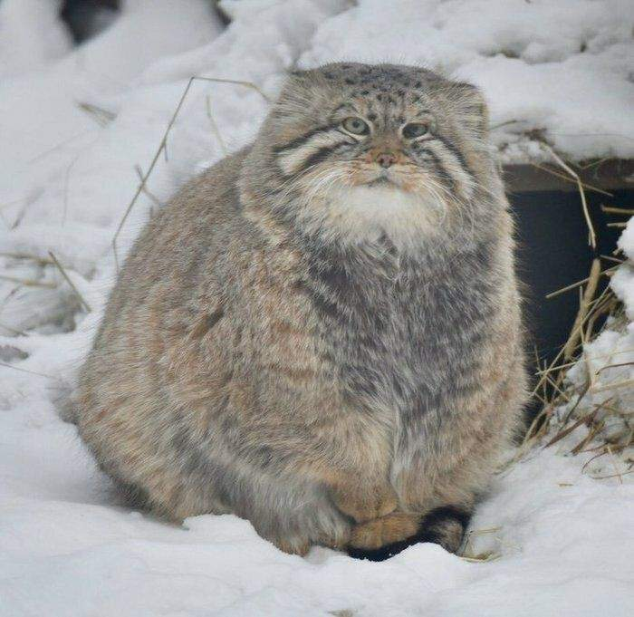

Welcome to cutiefie! Hallo :3 It's me, Sho, the author of Cutiefie. This website allows you to generate pictures of cute animals with a fun fact about each of them. I hope my website will lighten up your mood and please enjoy! Thank youuu

Pallas Cat. These fluffy, cute, grumpy-looking cats have unusual pupils. Unlike other cats, the pupils of Pallas' cats contract into small circles rather than vertical slits